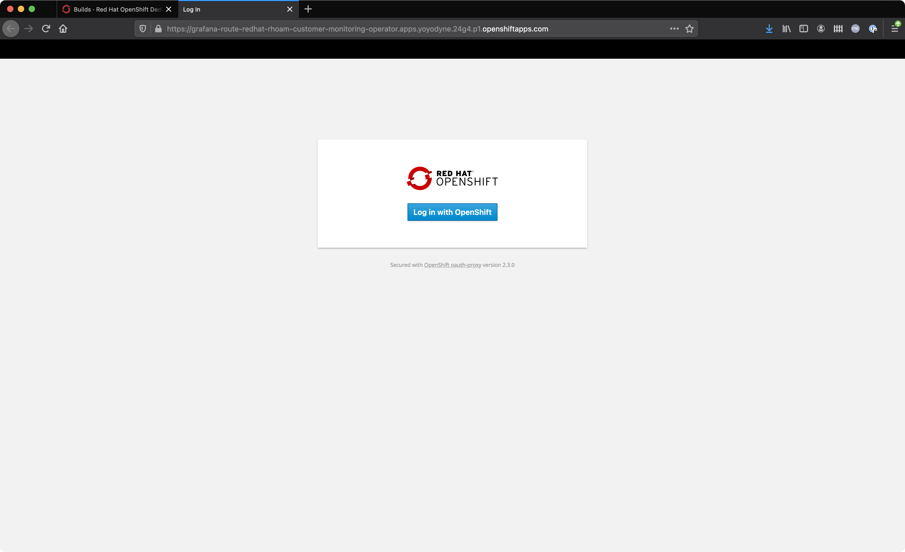
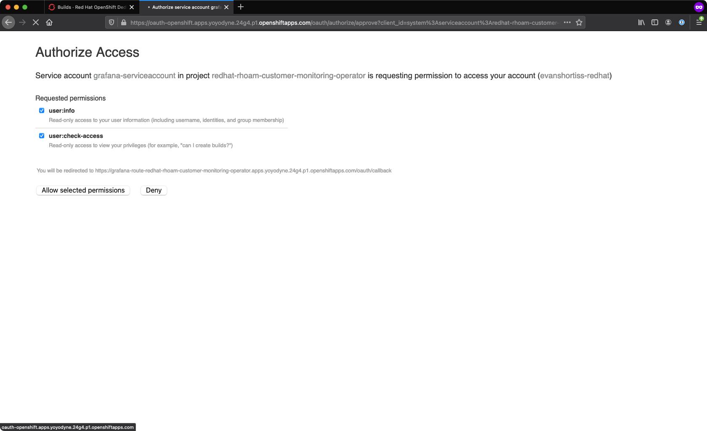
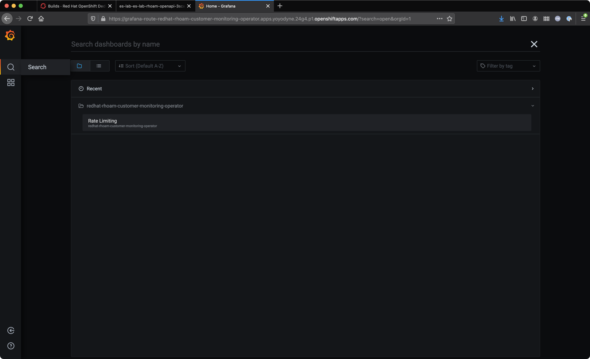

Red Hat OpenShift API Management Rate Limit Monitoring
RHOAM is a hosted and managed service, and a result:
-
Various subscription levels are available.
-
Subscription levels are segmented based on a maximum throughput.
-
Throughput is measured in API calls per minute/day.
A Grafana "Rate Limiting" dashboard is provided with RHOAM Customers can use this dashboard to determine where their usage stands with respect to the limits of their chosen subscription.
1. Accessing the Grafana Monitoring Instance
-
Navigate to the OpenShift Dedicated console and login.
-
Click the Application Launcher icon in the OpenShift Dedicated console. This the square icon in the top-right.
-
Select API Management Dashboards from the Application Launcher menu.
-
A new browser tab will open and prompt you to login using OpenShift OAuth. Click the Log in with OpenShift button.
 -
Authenticate using your configured IdP.
-
Authorize the account permissions request by choosing Allow selected permissions.

|
The Grafana Monitoring instance is only accessible by users that have been assigned the dedicated-admin role on the OpenShift Dedicated cluster. Reach out to your lab administrator to request this level of access if you cannot access the dashboard. If you’re the owner of the cluster in Red Hat OpenShift Cluster Manager you can personally upgrade your account to a dedicated-admin. |
You should be redirected to a Grafana instance homepage after successfully authenticating and authorizing account access.
2. Viewing the Grafana Monitoring Dashboard
Now that you’re able to view the RHOAM Rate Limiting Grafana instance, let’s go ahead and get familiar with it.
-
Navigate to the API Management Dashboards (Grafana) using the steps from the previous section.
-
Login if prompted to do so.
-
Click the Search icon on the left.
-
Expand the
redhat-rhoam-customer-monitoring-operatorfolder by clicking on it. -
A Rate Limiting entry should be listed similar to the screenshot below.
 -
Select Rate Limiting the Dashboards screen.
At this point you should be viewing the RHOAM API Rate Limiting Grafana dashboard.
3. Dashboard Overview
The RHOAM API Rate Limiting dashboard has useful information that includes:
-
Tiles for the number of accepted/rejected requests received in the past:
-
Minute.
-
24 hours.
-
-
Tiles for the percentage of requests that were accepted/rejected in the past:
-
Minute
-
24 hours.
-
-
A graph showing historical data of Per Minute API Requests.
A rejected request is defined as a request that was attempted by a client, but rejected by Red Hat OpenShift API Management with a HTTP 429 due to the active subscription’s rate limit being exceeded.
The following image shows a cluster that has minimal API activity - just 363 HTTP requests were processed by 3scale API Management in the past 24 hours. No requests are counted as rejected since 363 requests in a 24 hour window is nowhere close to the limits of any available subscription limit.
4. Per Minute API Requests Graph
The Per Minute API Requests Graph does exactly what the name implies. It displays historical data for the number of requests processed by 3scale API Management in a given minute.
In the top-right you can filter the time range that is displayed for the Per Minute API Requests graph. Data points for the No. of Requests, represented by the green line, is the number of requests processed in a given minute.
The following image displays an example of viewing data for a Last 1 hour. Notice how the graph displays small peaks of traffic followed by periods of inactivity.
The graph includes a few other useful lines that are in fixed positions. These lines represent important thresholds that you can use to gauge your API activity, and how close it is to exceeding subscription limits. For example, a sustained rate of ~3K requests per minute will approach the limits of 50M requests per day subscription. The same applies for 7K per minute and a 10M requests per day subscription, etc.
4.1. Filtered Per Minute API Requests Graph
If you’d like to view only the requests per minute you can click the No. of Requests in the legend below the graph. The graph should change display mode similar to the example in the screenshot below.
This is useful to view requests per minute in isolation, since the fixed position metrics can skew the scaling.
Run the following command to send requests to your Quarkus API, with a one second delay between each, and monitor the results in Grafana. Leave the script running for a few minutes then stop it.
# Replace this URL with your own from Lab 2 export STAGING_API_URL="https://$PROJECT_NAME_$PROJECT_NAME-rhoam-openapi-3scale-apicast-staging.apps.$CLUSTER_NAME.openshiftapps.com:443/fruits?user_key=$API_KEY" while sleep 0.65; do curl "$STAGING_API_URL" && echo " - $(date)"; done
After running this command you should have generated a graph that is similar to the one shown in the image below. This image shows a steady rate of 60 requests per minute, but your graph might show some variability.
|
Don’t forget that if you’re sharing a lab environment other lab users requests be reflected in this graph. |
Once you stop the script the graph should level out, or drop slightly similar to the following image.
Now you know how to access and view the Rate Limiting Grafana Dashboard that’s included with Red Hat OpenShift API Management.